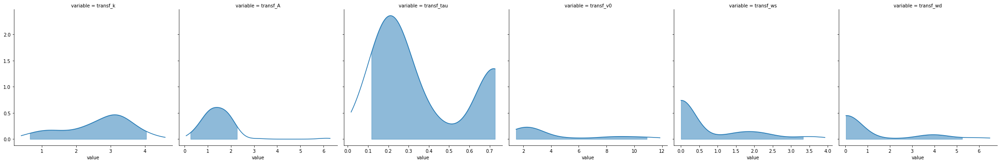
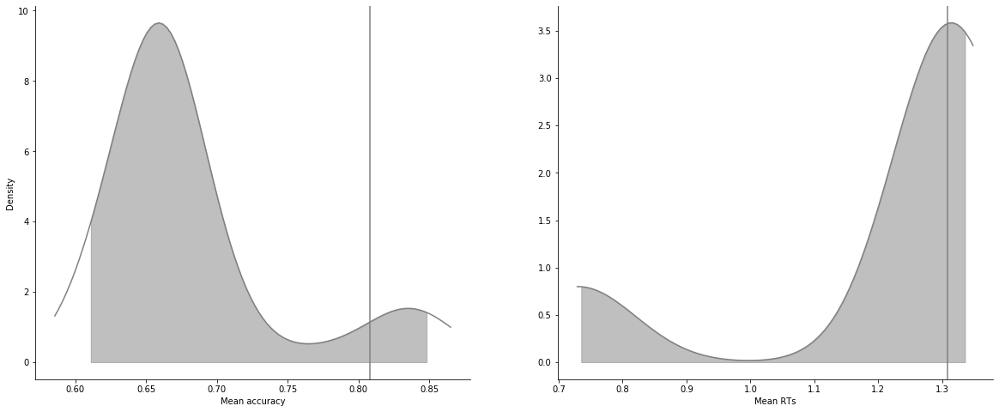
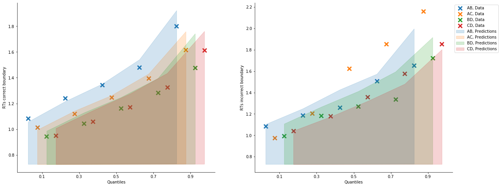

[1]:
import rlssm
import pandas as pd
import os
[3]:
def f(x):
return x
[4]:
par_path = os.path.abspath(os.path.join(os.getcwd(), os.pardir))
data_path = os.path.join(par_path, 'data/data_experiment.csv')
data = pd.read_csv(data_path, index_col=0)
data = data[data.participant < 4].reset_index(drop=True)
data['block_label'] += 1
data['S_cor'] = f(data['f_cor'].values)
data['S_inc'] = f(data['f_inc'].values)
data.head()
[4]:
| participant | block_label | trial_block | f_cor | f_inc | cor_option | inc_option | times_seen | rt | accuracy | S_cor | S_inc | |
|---|---|---|---|---|---|---|---|---|---|---|---|---|
| 0 | 1 | 1.0 | 1.0 | 43.0 | 39.0 | 2 | 1 | 1.0 | 1.244082 | 0.0 | 43.0 | 39.0 |
| 1 | 1 | 1.0 | 2.0 | 60.0 | 50.0 | 4 | 3 | 1.0 | 1.101821 | 1.0 | 60.0 | 50.0 |
| 2 | 1 | 1.0 | 3.0 | 44.0 | 36.0 | 4 | 2 | 2.0 | 1.029923 | 0.0 | 44.0 | 36.0 |
| 3 | 1 | 1.0 | 4.0 | 55.0 | 55.0 | 4 | 3 | 2.5 | 1.368007 | 0.0 | 55.0 | 55.0 |
| 4 | 1 | 1.0 | 5.0 | 52.0 | 49.0 | 4 | 3 | 3.5 | 1.039329 | 1.0 | 52.0 | 49.0 |
[5]:
model = rlssm.ALBAModel_2A(1)
INFO:pystan:COMPILING THE C++ CODE FOR MODEL anon_model_69427f5464eb2fc188bfd9fcea2e563b NOW.
INFO:pystan:OS: darwin, Python: 3.7.9 (default, Aug 31 2020, 07:22:35)
[Clang 10.0.0 ], Cython 0.29.21
Compiling /var/folders/zy/hm8tbx3j7jn6skbfk75x0ll00000gp/T/tmpdbmbv7mp/stanfit4anon_model_69427f5464eb2fc188bfd9fcea2e563b_987350642548915098.pyx because it changed.
[1/1] Cythonizing /var/folders/zy/hm8tbx3j7jn6skbfk75x0ll00000gp/T/tmpdbmbv7mp/stanfit4anon_model_69427f5464eb2fc188bfd9fcea2e563b_987350642548915098.pyx
building 'stanfit4anon_model_69427f5464eb2fc188bfd9fcea2e563b_987350642548915098' extension
creating /var/folders/zy/hm8tbx3j7jn6skbfk75x0ll00000gp/T/tmpdbmbv7mp/var
creating /var/folders/zy/hm8tbx3j7jn6skbfk75x0ll00000gp/T/tmpdbmbv7mp/var/folders
creating /var/folders/zy/hm8tbx3j7jn6skbfk75x0ll00000gp/T/tmpdbmbv7mp/var/folders/zy
creating /var/folders/zy/hm8tbx3j7jn6skbfk75x0ll00000gp/T/tmpdbmbv7mp/var/folders/zy/hm8tbx3j7jn6skbfk75x0ll00000gp
creating /var/folders/zy/hm8tbx3j7jn6skbfk75x0ll00000gp/T/tmpdbmbv7mp/var/folders/zy/hm8tbx3j7jn6skbfk75x0ll00000gp/T
creating /var/folders/zy/hm8tbx3j7jn6skbfk75x0ll00000gp/T/tmpdbmbv7mp/var/folders/zy/hm8tbx3j7jn6skbfk75x0ll00000gp/T/tmpdbmbv7mp
x86_64-apple-darwin13.4.0-clang -fno-strict-aliasing -Wsign-compare -Wunreachable-code -DNDEBUG -fwrapv -O3 -Wall -Wstrict-prototypes -march=core2 -mtune=haswell -mssse3 -ftree-vectorize -fPIC -fPIE -fstack-protector-strong -O3 -pipe -fdebug-prefix-map=${SRC_DIR}=/usr/local/src/conda/${PKG_NAME}-${PKG_VERSION} -fdebug-prefix-map=/Users/laurafontanesi/miniconda3/envs/rlssm=/usr/local/src/conda-prefix -flto -Wl,-export_dynamic -march=core2 -mtune=haswell -mssse3 -ftree-vectorize -fPIC -fPIE -fstack-protector-strong -O3 -march=core2 -mtune=haswell -mssse3 -ftree-vectorize -fPIC -fPIE -fstack-protector-strong -O2 -pipe -isystem /Users/laurafontanesi/miniconda3/envs/rlssm/include -D_FORTIFY_SOURCE=2 -mmacosx-version-min=10.9 -isystem /Users/laurafontanesi/miniconda3/envs/rlssm/include -DBOOST_RESULT_OF_USE_TR1 -DBOOST_NO_DECLTYPE -DBOOST_DISABLE_ASSERTS -I/var/folders/zy/hm8tbx3j7jn6skbfk75x0ll00000gp/T/tmpdbmbv7mp -I/Users/laurafontanesi/miniconda3/envs/rlssm/lib/python3.7/site-packages/pystan -I/Users/laurafontanesi/miniconda3/envs/rlssm/lib/python3.7/site-packages/pystan/stan/src -I/Users/laurafontanesi/miniconda3/envs/rlssm/lib/python3.7/site-packages/pystan/stan/lib/stan_math -I/Users/laurafontanesi/miniconda3/envs/rlssm/lib/python3.7/site-packages/pystan/stan/lib/stan_math/lib/eigen_3.3.3 -I/Users/laurafontanesi/miniconda3/envs/rlssm/lib/python3.7/site-packages/pystan/stan/lib/stan_math/lib/boost_1.69.0 -I/Users/laurafontanesi/miniconda3/envs/rlssm/lib/python3.7/site-packages/pystan/stan/lib/stan_math/lib/sundials_4.1.0/include -I/Users/laurafontanesi/miniconda3/envs/rlssm/lib/python3.7/site-packages/numpy/core/include -I/Users/laurafontanesi/miniconda3/envs/rlssm/include/python3.7m -c /var/folders/zy/hm8tbx3j7jn6skbfk75x0ll00000gp/T/tmpdbmbv7mp/stanfit4anon_model_69427f5464eb2fc188bfd9fcea2e563b_987350642548915098.cpp -o /var/folders/zy/hm8tbx3j7jn6skbfk75x0ll00000gp/T/tmpdbmbv7mp/var/folders/zy/hm8tbx3j7jn6skbfk75x0ll00000gp/T/tmpdbmbv7mp/stanfit4anon_model_69427f5464eb2fc188bfd9fcea2e563b_987350642548915098.o -O2 -ftemplate-depth-256 -Wno-unused-function -Wno-uninitialized -std=c++1y
x86_64-apple-darwin13.4.0-clang++ -bundle -undefined dynamic_lookup -Wl,-pie -Wl,-headerpad_max_install_names -Wl,-dead_strip_dylibs -Wl,-rpath,/Users/laurafontanesi/miniconda3/envs/rlssm/lib -L/Users/laurafontanesi/miniconda3/envs/rlssm/lib -flto -Wl,-export_dynamic -Wl,-pie -Wl,-headerpad_max_install_names -Wl,-dead_strip_dylibs -Wl,-rpath,/Users/laurafontanesi/miniconda3/envs/rlssm/lib -L/Users/laurafontanesi/miniconda3/envs/rlssm/lib -Wl,-pie -Wl,-headerpad_max_install_names -Wl,-dead_strip_dylibs -Wl,-rpath,/Users/laurafontanesi/miniconda3/envs/rlssm/lib -L/Users/laurafontanesi/miniconda3/envs/rlssm/lib -march=core2 -mtune=haswell -mssse3 -ftree-vectorize -fPIC -fPIE -fstack-protector-strong -O2 -pipe -isystem /Users/laurafontanesi/miniconda3/envs/rlssm/include -D_FORTIFY_SOURCE=2 -mmacosx-version-min=10.9 -isystem /Users/laurafontanesi/miniconda3/envs/rlssm/include -arch x86_64 /var/folders/zy/hm8tbx3j7jn6skbfk75x0ll00000gp/T/tmpdbmbv7mp/var/folders/zy/hm8tbx3j7jn6skbfk75x0ll00000gp/T/tmpdbmbv7mp/stanfit4anon_model_69427f5464eb2fc188bfd9fcea2e563b_987350642548915098.o -o /var/folders/zy/hm8tbx3j7jn6skbfk75x0ll00000gp/T/tmpdbmbv7mp/stanfit4anon_model_69427f5464eb2fc188bfd9fcea2e563b_987350642548915098.cpython-37m-darwin.so
---------------------------------------------------------------------------
FileNotFoundError Traceback (most recent call last)
~/miniconda3/envs/rlssm/lib/python3.7/site-packages/rlssm-0.1.dev0-py3.7.egg/rlssm/stan_utility.py in compile_model(filename, model_name)
221 try:
--> 222 sm = pickle.load(open(cache_fn, 'rb'))
223 except:
FileNotFoundError: [Errno 2] No such file or directory: 'cached-ALBA_2A-69427f5464eb2fc188bfd9fcea2e563b.pkl'
During handling of the above exception, another exception occurred:
DistutilsExecError Traceback (most recent call last)
~/miniconda3/envs/rlssm/lib/python3.7/distutils/unixccompiler.py in link(self, target_desc, objects, output_filename, output_dir, libraries, library_dirs, runtime_library_dirs, export_symbols, debug, extra_preargs, extra_postargs, build_temp, target_lang)
204
--> 205 self.spawn(linker + ld_args)
206 except DistutilsExecError as msg:
~/miniconda3/envs/rlssm/lib/python3.7/distutils/ccompiler.py in spawn(self, cmd)
909 def spawn(self, cmd):
--> 910 spawn(cmd, dry_run=self.dry_run)
911
~/miniconda3/envs/rlssm/lib/python3.7/distutils/spawn.py in spawn(cmd, search_path, verbose, dry_run)
35 if os.name == 'posix':
---> 36 _spawn_posix(cmd, search_path, dry_run=dry_run)
37 elif os.name == 'nt':
~/miniconda3/envs/rlssm/lib/python3.7/distutils/spawn.py in _spawn_posix(cmd, search_path, verbose, dry_run)
158 "command %r failed with exit status %d"
--> 159 % (cmd, exit_status))
160 elif os.WIFSTOPPED(status):
DistutilsExecError: command 'x86_64-apple-darwin13.4.0-clang++' failed with exit status 1
During handling of the above exception, another exception occurred:
LinkError Traceback (most recent call last)
<ipython-input-5-5786592ccd43> in <module>
----> 1 model = rlssm.ALBAModel_2A(1)
~/miniconda3/envs/rlssm/lib/python3.7/site-packages/rlssm-0.1.dev0-py3.7.egg/rlssm/models_ALBA.py in __init__(self, hierarchical_levels)
58
59 # Finally, compile the model
---> 60 self._compile_stan_model()
61
62 def fit(self,
~/miniconda3/envs/rlssm/lib/python3.7/site-packages/rlssm-0.1.dev0-py3.7.egg/rlssm/models.py in _compile_stan_model(self)
57 """
58 self.compiled_model = compile_model(filename=self.stan_model_path,
---> 59 model_name=self.model_label)
~/miniconda3/envs/rlssm/lib/python3.7/site-packages/rlssm-0.1.dev0-py3.7.egg/rlssm/stan_utility.py in compile_model(filename, model_name)
222 sm = pickle.load(open(cache_fn, 'rb'))
223 except:
--> 224 sm = pystan.StanModel(model_code=model_code, verbose=True)
225 with open(cache_fn, 'wb') as f:
226 pickle.dump(sm, f)
~/miniconda3/envs/rlssm/lib/python3.7/site-packages/pystan/model.py in __init__(self, file, charset, model_name, model_code, stanc_ret, include_paths, boost_lib, eigen_lib, verbose, obfuscate_model_name, extra_compile_args)
347
348 try:
--> 349 build_extension.run()
350 finally:
351 if redirect_stderr:
~/miniconda3/envs/rlssm/lib/python3.7/distutils/command/build_ext.py in run(self)
338
339 # Now actually compile and link everything.
--> 340 self.build_extensions()
341
342 def check_extensions_list(self, extensions):
~/miniconda3/envs/rlssm/lib/python3.7/distutils/command/build_ext.py in build_extensions(self)
447 self._build_extensions_parallel()
448 else:
--> 449 self._build_extensions_serial()
450
451 def _build_extensions_parallel(self):
~/miniconda3/envs/rlssm/lib/python3.7/distutils/command/build_ext.py in _build_extensions_serial(self)
472 for ext in self.extensions:
473 with self._filter_build_errors(ext):
--> 474 self.build_extension(ext)
475
476 @contextlib.contextmanager
~/miniconda3/envs/rlssm/lib/python3.7/distutils/command/build_ext.py in build_extension(self, ext)
557 debug=self.debug,
558 build_temp=self.build_temp,
--> 559 target_lang=language)
560
561 def swig_sources(self, sources, extension):
~/miniconda3/envs/rlssm/lib/python3.7/distutils/ccompiler.py in link_shared_object(self, objects, output_filename, output_dir, libraries, library_dirs, runtime_library_dirs, export_symbols, debug, extra_preargs, extra_postargs, build_temp, target_lang)
715 libraries, library_dirs, runtime_library_dirs,
716 export_symbols, debug,
--> 717 extra_preargs, extra_postargs, build_temp, target_lang)
718
719
~/miniconda3/envs/rlssm/lib/python3.7/distutils/unixccompiler.py in link(self, target_desc, objects, output_filename, output_dir, libraries, library_dirs, runtime_library_dirs, export_symbols, debug, extra_preargs, extra_postargs, build_temp, target_lang)
205 self.spawn(linker + ld_args)
206 except DistutilsExecError as msg:
--> 207 raise LinkError(msg)
208 else:
209 log.debug("skipping %s (up-to-date)", output_filename)
LinkError: command 'x86_64-apple-darwin13.4.0-clang++' failed with exit status 1
[5]:
# sampling parameters
n_iter = 700
n_chains = 2
n_thin = 5
[6]:
model_fit = model.fit(data,
thin = n_thin,
iter = n_iter,
chains = n_chains)
WARNING:pystan:Maximum (flat) parameter count (1000) exceeded: skipping diagnostic tests for n_eff and Rhat.
To run all diagnostics call pystan.check_hmc_diagnostics(fit)
WARNING:pystan:16 of 140 iterations ended with a divergence (11.4 %).
WARNING:pystan:Try running with adapt_delta larger than 0.8 to remove the divergences.
WARNING:pystan:6 of 140 iterations saturated the maximum tree depth of 10 (4.29 %)
WARNING:pystan:Run again with max_treedepth larger than 10 to avoid saturation
WARNING:pystan:Chain 2: E-BFMI = 0.056
WARNING:pystan:E-BFMI below 0.2 indicates you may need to reparameterize your model
Checks MCMC diagnostics:
n_eff / iter looks reasonable for all parameters
16.0 of 140 iterations ended with a divergence (11.428571428571429%)
Try running with larger adapt_delta to remove the divergences
6 of 140 iterations saturated the maximum tree depth of 10 (4.285714285714286%)
Run again with max_depth set to a larger value to avoid saturation
Chain 1: E-BFMI = 0.05595253818325452
E-BFMI below 0.2 indicates you may need to reparameterize your model
[7]:
model_fit.rhat.describe()
[7]:
| rhat | |
|---|---|
| count | 6.000000 |
| mean | 2.082797 |
| std | 0.536378 |
| min | 1.317865 |
| 25% | 1.731858 |
| 50% | 2.234719 |
| 75% | 2.331277 |
| max | 2.781781 |
[8]:
model_fit.rhat.head()
[8]:
| rhat | variable | |
|---|---|---|
| 0 | 1.592140 | k |
| 1 | 1.317865 | A |
| 2 | 2.151010 | tau |
| 3 | 2.335561 | v0 |
| 4 | 2.781781 | ws |
[9]:
model_fit.waic
[9]:
{'lppd': -713.409940380724,
'p_waic': 72143.76196442061,
'waic': 145714.34380960267,
'waic_se': 456.6106300253051}
Posteriors¶
[10]:
model_fit.samples
[10]:
| chain | draw | transf_k | transf_A | transf_tau | transf_v0 | transf_ws | transf_wd | |
|---|---|---|---|---|---|---|---|---|
| 0 | 0 | 11 | 3.439463 | 1.768580 | 0.166441 | 2.240498 | 0.010908 | 0.044275 |
| 1 | 0 | 69 | 2.371216 | 1.942588 | 0.339697 | 2.369782 | 0.006752 | 0.038272 |
| 2 | 0 | 51 | 3.401261 | 1.494359 | 0.178384 | 2.094716 | 0.011546 | 0.031092 |
| 3 | 0 | 50 | 3.885847 | 1.576500 | 0.110763 | 2.899971 | 0.005471 | 0.044274 |
| 4 | 0 | 23 | 3.502185 | 1.770572 | 0.163297 | 2.364724 | 0.010324 | 0.041937 |
| ... | ... | ... | ... | ... | ... | ... | ... | ... |
| 135 | 1 | 32 | 1.443901 | 1.531851 | 0.721752 | 8.148716 | 2.329104 | 5.957971 |
| 136 | 1 | 26 | 1.089834 | 1.077246 | 0.723479 | 5.164583 | 2.127443 | 6.219576 |
| 137 | 1 | 33 | 1.608111 | 0.951355 | 0.725026 | 11.437288 | 3.397031 | 5.774853 |
| 138 | 1 | 40 | 1.174408 | 6.283967 | 0.709612 | 5.250204 | 0.000255 | 0.086894 |
| 139 | 1 | 57 | 2.907412 | 2.138469 | 0.267627 | 2.414196 | 0.009025 | 0.045650 |
140 rows × 8 columns
[11]:
model_fit.trial_samples
[11]:
OrderedDict([('k_t',
array([[3.43946273, 3.43946273, 3.43946273, ..., 3.43946273, 3.43946273,
3.43946273],
[2.37121553, 2.37121553, 2.37121553, ..., 2.37121553, 2.37121553,
2.37121553],
[3.40126085, 3.40126085, 3.40126085, ..., 3.40126085, 3.40126085,
3.40126085],
...,
[1.60811102, 1.60811102, 1.60811102, ..., 1.60811102, 1.60811102,
1.60811102],
[1.1744078 , 1.1744078 , 1.1744078 , ..., 1.1744078 , 1.1744078 ,
1.1744078 ],
[2.90741241, 2.90741241, 2.90741241, ..., 2.90741241, 2.90741241,
2.90741241]])),
('A_t',
array([[1.76857965, 1.76857965, 1.76857965, ..., 1.76857965, 1.76857965,
1.76857965],
[1.94258788, 1.94258788, 1.94258788, ..., 1.94258788, 1.94258788,
1.94258788],
[1.49435921, 1.49435921, 1.49435921, ..., 1.49435921, 1.49435921,
1.49435921],
...,
[0.95135457, 0.95135457, 0.95135457, ..., 0.95135457, 0.95135457,
0.95135457],
[6.28396733, 6.28396733, 6.28396733, ..., 6.28396733, 6.28396733,
6.28396733],
[2.13846853, 2.13846853, 2.13846853, ..., 2.13846853, 2.13846853,
2.13846853]])),
('tau_t',
array([[0.16644075, 0.16644075, 0.16644075, ..., 0.16644075, 0.16644075,
0.16644075],
[0.33969682, 0.33969682, 0.33969682, ..., 0.33969682, 0.33969682,
0.33969682],
[0.17838365, 0.17838365, 0.17838365, ..., 0.17838365, 0.17838365,
0.17838365],
...,
[0.72502584, 0.72502584, 0.72502584, ..., 0.72502584, 0.72502584,
0.72502584],
[0.70961197, 0.70961197, 0.70961197, ..., 0.70961197, 0.70961197,
0.70961197],
[0.26762737, 0.26762737, 0.26762737, ..., 0.26762737, 0.26762737,
0.26762737]])),
('drift_cor_t',
array([[ 3.31203322, 3.88310036, 3.46731779, ..., 3.85230916,
3.85230916, 3.9755145 ],
[ 3.07650817, 3.49518924, 3.21609449, ..., 3.50873151,
3.50873151, 3.63932859],
[ 3.16583593, 3.67566733, 3.26711101, ..., 3.59575579,
3.59575579, 3.64730216],
...,
[313.09326081, 442.85925287, 329.39860994, ..., 409.22834301,
409.22834301, 407.52932638],
[ 5.61865453, 6.14714765, 5.96572243, ..., 6.40401206,
6.40401206, 6.83619232],
[ 3.33681119, 3.86339817, 3.5013612 , ..., 3.86497886,
3.86497886, 4.0120066 ]])),
('drift_inc_t',
array([[ 2.95783306, 2.99759997, 2.75891748, ..., 2.70115865,
2.70115865, 2.38161379],
[ 2.77032887, 2.72974099, 2.60373589, ..., 2.5136488 ,
2.5136488 , 2.26152176],
[ 2.91710269, 3.05383424, 2.76964454, ..., 2.78737277,
2.78737277, 2.5280026 ],
...,
[266.8944376 , 327.36219484, 237.00096352, ..., 259.08216758,
259.08216758, 199.63462193],
[ 4.9235005 , 4.40926257, 4.57541437, ..., 4.14476145,
4.14476145, 3.70799917],
[ 2.97161285, 2.95040233, 2.77096452, ..., 2.67808425,
2.67808425, 2.36861407]]))])
[12]:
model_fit.plot_posteriors(height=5, show_intervals='HDI');

[13]:
pp_rt, pp_acc = model_fit.get_posterior_predictives(n_posterior_predictives=100)
[14]:
pp_rt
[14]:
array([[1.08219003, 1.07734941, 1.13200406, ..., 1.12135476, 1.0959723 ,
1.56699627],
[1.23827036, 1.70853781, 1.01761332, ..., 1.02693579, 1.25008666,
1.7023603 ],
[1.26686898, 1.51352905, 1.4063798 , ..., 1.4945944 , 1.09914665,
1.21147519],
...,
[0.73177931, 0.72891351, 0.73157837, ..., 0.7302144 , 0.72934249,
0.72879789],
[1.23250421, 1.20326431, 1.25127064, ..., 1.07215756, 1.65715766,
1.38240776],
[1.03843332, 1.19714182, 0.98279278, ..., 1.63020437, 1.16658523,
1.23404482]])
[15]:
pp_acc
[15]:
array([[0., 1., 1., ..., 1., 1., 1.],
[0., 1., 0., ..., 0., 0., 1.],
[1., 1., 1., ..., 0., 0., 1.],
...,
[1., 1., 1., ..., 1., 1., 1.],
[1., 1., 1., ..., 1., 1., 1.],
[1., 1., 0., ..., 0., 0., 1.]])
[16]:
pp_summary = model_fit.get_posterior_predictives_summary(n_posterior_predictives=100)
pp_summary
[16]:
| mean_accuracy | mean_rt | skewness | quant_10_rt_incorrect | quant_30_rt_incorrect | quant_50_rt_incorrect | quant_70_rt_incorrect | quant_90_rt_incorrect | quant_10_rt_correct | quant_30_rt_correct | quant_50_rt_correct | quant_70_rt_correct | quant_90_rt_correct | |
|---|---|---|---|---|---|---|---|---|---|---|---|---|---|
| sample | |||||||||||||
| 1 | 0.678720 | 1.312660 | 5.332706 | 1.015079 | 1.168945 | 1.302301 | 1.445678 | 1.696513 | 0.948458 | 1.094496 | 1.247343 | 1.401123 | 1.701248 |
| 2 | 0.662031 | 1.296965 | 2.348485 | 0.989010 | 1.120128 | 1.257763 | 1.392898 | 1.664433 | 0.955194 | 1.088370 | 1.221435 | 1.368740 | 1.691166 |
| 3 | 0.653686 | 1.324243 | 1.181960 | 1.011896 | 1.194082 | 1.305881 | 1.441265 | 1.749829 | 0.979149 | 1.138205 | 1.259054 | 1.410988 | 1.719769 |
| 4 | 0.682893 | 1.289680 | 1.049611 | 1.018312 | 1.161074 | 1.297706 | 1.431849 | 1.725084 | 0.962127 | 1.089960 | 1.212444 | 1.372317 | 1.619924 |
| 5 | 0.692629 | 1.310222 | 2.401445 | 0.979163 | 1.145529 | 1.281138 | 1.397081 | 1.714048 | 0.952279 | 1.130749 | 1.240769 | 1.398436 | 1.693825 |
| ... | ... | ... | ... | ... | ... | ... | ... | ... | ... | ... | ... | ... | ... |
| 96 | 0.689847 | 1.310640 | 1.701160 | 1.008797 | 1.158082 | 1.271471 | 1.438872 | 1.782482 | 0.967013 | 1.097195 | 1.231184 | 1.387852 | 1.671561 |
| 97 | 0.656467 | 0.731160 | 0.619536 | 0.729107 | 0.730098 | 0.731125 | 0.732072 | 0.733886 | 0.728360 | 0.729491 | 0.730931 | 0.732171 | 0.734076 |
| 98 | 0.840056 | 0.730432 | 0.823316 | 0.729303 | 0.730281 | 0.731506 | 0.732670 | 0.733936 | 0.728056 | 0.728908 | 0.729715 | 0.730996 | 0.733260 |
| 99 | 0.649513 | 1.305700 | 1.461918 | 1.014835 | 1.149883 | 1.280499 | 1.430125 | 1.620068 | 0.965359 | 1.090581 | 1.230520 | 1.402952 | 1.686330 |
| 100 | 0.688456 | 1.315443 | 1.304241 | 1.016122 | 1.155766 | 1.294384 | 1.532609 | 1.890806 | 0.957318 | 1.094916 | 1.232726 | 1.379069 | 1.664425 |
100 rows × 13 columns
[17]:
model_fit.plot_mean_posterior_predictives(n_posterior_predictives=100, figsize=(20,8), show_intervals='HDI');

[18]:
model_fit.plot_quantiles_posterior_predictives(n_posterior_predictives=100, kind='shades');

[19]:
import numpy as np
[20]:
data['choice_pair'] = 'AB'
data.loc[(data.cor_option == 3) & (data.inc_option == 1), 'choice_pair'] = 'AC'
data.loc[(data.cor_option == 4) & (data.inc_option == 2), 'choice_pair'] = 'BD'
data.loc[(data.cor_option == 4) & (data.inc_option == 3), 'choice_pair'] = 'CD'
data['block_bins'] = pd.cut(data.trial_block, 8, labels=np.arange(1, 9))
[21]:
data.head()
[21]:
| index | participant | block_label | trial_block | f_cor | f_inc | cor_option | inc_option | times_seen | rt | accuracy | S_cor | S_inc | accuracy_rescale | choice_pair | block_bins | |
|---|---|---|---|---|---|---|---|---|---|---|---|---|---|---|---|---|
| 0 | 0 | 1 | 1.0 | 1.0 | 43.0 | 39.0 | 2 | 1 | 1.0 | 1.244082 | 0.0 | 43.0 | 39.0 | 2 | AB | 1 |
| 1 | 1 | 1 | 1.0 | 2.0 | 60.0 | 50.0 | 4 | 3 | 1.0 | 1.101821 | 1.0 | 60.0 | 50.0 | 1 | CD | 1 |
| 2 | 2 | 1 | 1.0 | 3.0 | 44.0 | 36.0 | 4 | 2 | 2.0 | 1.029923 | 0.0 | 44.0 | 36.0 | 2 | BD | 1 |
| 3 | 3 | 1 | 1.0 | 4.0 | 55.0 | 55.0 | 4 | 3 | 2.5 | 1.368007 | 0.0 | 55.0 | 55.0 | 2 | CD | 1 |
| 4 | 4 | 1 | 1.0 | 5.0 | 52.0 | 49.0 | 4 | 3 | 3.5 | 1.039329 | 1.0 | 52.0 | 49.0 | 1 | CD | 1 |
[22]:
model_fit.get_grouped_posterior_predictives_summary(
grouping_vars=['block_label', 'choice_pair'],
quantiles=[.3, .5, .7],
n_posterior_predictives=100)
[22]:
| mean_accuracy | mean_rt | skewness | quant_30_rt_incorrect | quant_30_rt_correct | quant_50_rt_incorrect | quant_50_rt_correct | quant_70_rt_incorrect | quant_70_rt_correct | |||
|---|---|---|---|---|---|---|---|---|---|---|---|
| block_label | choice_pair | sample | |||||||||
| 1.0 | AB | 1 | 0.694915 | 1.391804 | 0.752668 | 1.330990 | 1.183769 | 1.544382 | 1.271797 | 1.613481 | 1.422510 |
| 2 | 0.508475 | 1.408464 | 3.438360 | 1.196624 | 1.052700 | 1.375336 | 1.159288 | 1.540191 | 1.381302 | ||
| 3 | 0.576271 | 1.367223 | 1.291625 | 1.207376 | 1.239631 | 1.271163 | 1.364551 | 1.414820 | 1.447458 | ||
| 4 | 0.593220 | 1.341534 | 1.452453 | 1.080698 | 1.226635 | 1.215693 | 1.312664 | 1.361498 | 1.478444 | ||
| 5 | 0.576271 | 1.415912 | 0.827003 | 1.277740 | 1.152302 | 1.385119 | 1.253708 | 1.595730 | 1.476362 | ||
| ... | ... | ... | ... | ... | ... | ... | ... | ... | ... | ... | ... |
| 3.0 | CD | 96 | 0.700000 | 1.254787 | 0.733045 | 1.076603 | 1.160717 | 1.147408 | 1.276568 | 1.303112 | 1.366496 |
| 97 | 0.666667 | 0.729988 | -0.044329 | 0.729547 | 0.728996 | 0.730161 | 0.729831 | 0.730969 | 0.730764 | ||
| 98 | 0.766667 | 0.729507 | -0.133289 | 0.729346 | 0.728993 | 0.729931 | 0.729576 | 0.730376 | 0.729756 | ||
| 99 | 0.550000 | 1.249236 | 1.308857 | 1.105409 | 1.077058 | 1.271080 | 1.213814 | 1.368468 | 1.283030 | ||
| 100 | 0.533333 | 1.287272 | 1.505407 | 1.099497 | 1.076182 | 1.271402 | 1.220407 | 1.424711 | 1.396624 |
1200 rows × 9 columns
[23]:
model_fit.get_grouped_posterior_predictives_summary(
grouping_vars=['block_bins'],
quantiles=[.3, .5, .7],
n_posterior_predictives=100)
[23]:
| mean_accuracy | mean_rt | skewness | quant_30_rt_incorrect | quant_30_rt_correct | quant_50_rt_incorrect | quant_50_rt_correct | quant_70_rt_incorrect | quant_70_rt_correct | ||
|---|---|---|---|---|---|---|---|---|---|---|
| block_bins | sample | |||||||||
| 1 | 1 | 0.711111 | 1.329607 | 1.917104 | 1.204122 | 1.148433 | 1.281992 | 1.241262 | 1.514751 | 1.366406 |
| 2 | 0.577778 | 1.373249 | 0.843005 | 1.153107 | 1.113925 | 1.325622 | 1.286283 | 1.507662 | 1.510322 | |
| 3 | 0.622222 | 1.336002 | 1.110816 | 1.175664 | 1.148256 | 1.372691 | 1.227145 | 1.474131 | 1.414078 | |
| 4 | 0.622222 | 1.335371 | 1.724462 | 1.251985 | 1.080796 | 1.429428 | 1.200703 | 1.608930 | 1.328291 | |
| 5 | 0.655556 | 1.359607 | 1.155517 | 1.126875 | 1.162695 | 1.326859 | 1.304382 | 1.521795 | 1.448415 | |
| ... | ... | ... | ... | ... | ... | ... | ... | ... | ... | ... |
| 8 | 96 | 0.629213 | 1.276164 | 2.209072 | 1.157601 | 1.098297 | 1.288112 | 1.181555 | 1.435050 | 1.239506 |
| 97 | 0.674157 | 0.731055 | 1.088721 | 0.730260 | 0.729678 | 0.730887 | 0.730192 | 0.731666 | 0.731899 | |
| 98 | 0.831461 | 0.730567 | 0.822404 | 0.731346 | 0.729182 | 0.732004 | 0.730160 | 0.733424 | 0.730783 | |
| 99 | 0.752809 | 1.347551 | 1.194279 | 1.180723 | 1.147064 | 1.335062 | 1.243751 | 1.676498 | 1.408976 | |
| 100 | 0.674157 | 1.289410 | 0.809901 | 1.161913 | 1.075196 | 1.314609 | 1.184201 | 1.508138 | 1.338526 |
800 rows × 9 columns
[24]:
model_fit.plot_mean_grouped_posterior_predictives(grouping_vars=['block_bins'],
n_posterior_predictives=100,
figsize=(20,8));

[25]:
model_fit.plot_quantiles_grouped_posterior_predictives(
n_posterior_predictives=100,
grouping_var='choice_pair',
kind='shades',
quantiles=[.1, .3, .5, .7, .9]);

[26]:
sv = model_fit.last_values
sv
[26]:
| chain | draw | warmup | A | k | tau | v0 | wd | ws | |
|---|---|---|---|---|---|---|---|---|---|
| 69 | 0 | 69 | 0 | 1.787882 | 2.273198 | -0.905050 | 2.271617 | -3.243829 | -4.994589 |
| 139 | 1 | 69 | 0 | 1.425895 | 2.977725 | -1.490763 | 2.279777 | -3.311904 | -4.964643 |
[ ]: